Create a BitString Alarm
You want to create a management station alarm that monitors a 32 BitString data point value. For example, the states High limit and Fault could trigger the alarm State (Client profile BA_EN). Both TRUE conditions must be met to trigger the State alarm. All other possible state combinations do not trigger an alarm.
Create Alarm Configuration
- The data point must be type GmsBitString based on PvssBit32 to be able to configure a BitString alarm (see Step 4).
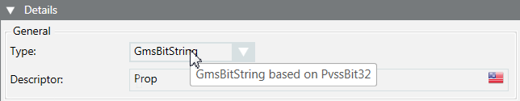
- In System Browser, select Project > Field Networks > [network] > Hardware > [device] > [data point].
NOTE: The folder path may vary by subsystem or view. - Select the Object Configurator tab.
- In the Properties expander, select the relevant Property (for example, Property Alarm).
- In the Details expander and in the General group box, check the Type. The data type GmsBitString based on PvssBit32 must display in the tool tip.
- In the Alarm Configuration expander, select Valid. The activation is displayed in gray.
- Select the Management Station option.
- The selection for Alarm Type is not possible in the drop-down list.
- (Optional) From the Alarm flags drop-down-list, select None, No alarm on driver invalid, No alarm on source time invalid (for background information, see the alarm configuration reference section).
- Click New for a new alarm class.
- Set the conditions for each alarm class:
a. Select the Alarm Classtype.
b. In the Value range column, select the Operand.
c. In the Value range column, select the check box.
d. Open the selection pane and activate the corresponding BitStrings. The activated BitStrings act as an AND condition. All activated BitStrings must be TRUE to trigger an alarm. In the following example, these are Fault (1)and High Limit (2).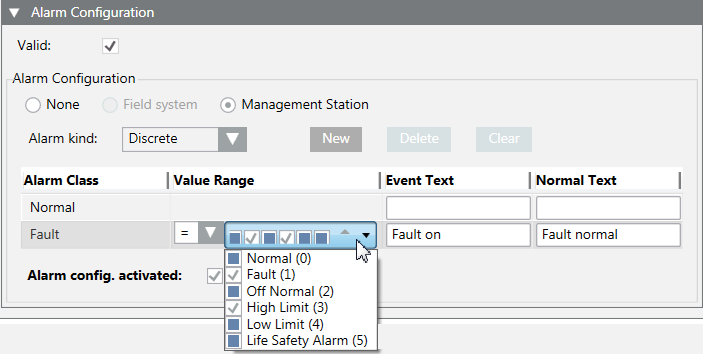
.
e. Enter the required information in Alarm text and Normal text fields. Depending on your assigned event profile, the alarm lamps maybe different as in the picture.
f. Select the check box Activate device recognition. - (Optional) Repeat Step 9 if additional conditions are required.
NOTE: The alarm with the highest alarm priority must be defined at the bottom if multiple alarm conditions are defined because alarm processing occurs from bottom to top. The remaining alarm definitions are no longer evaluated as soon as a condition is met.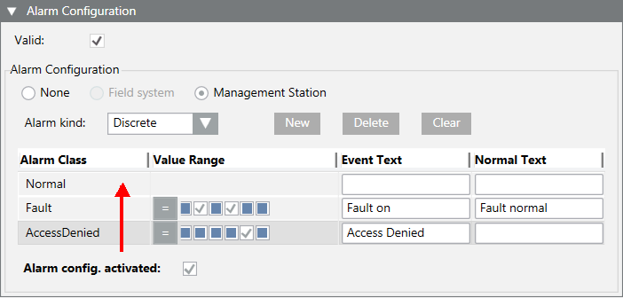
- Click Save
 .
.
- The alarm configuration is concluded and cannot be tested.
Test the Alarm Configuration and Triggering the Alarm
- The object model must have a button for commanding to be tested. Select the object model and define for BACnet BACnetWriteBitString or GenericWriteBitString.
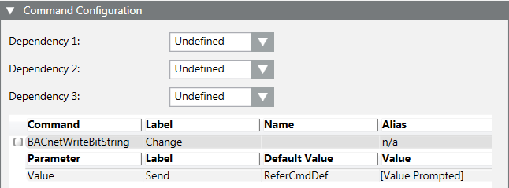
- Select Project > Field Networks > [network name] > Hardware > [device name] > [data point].
NOTE: The folder path may vary by subsystem or view. - In the Contextual pane:
a. Select the Operation tab.
b. Locate the corresponding property (for example: Property Alarm).
c. In the BitString mask, activate Fault and Top limit (the states are displayed in the tool tip). The selected boxes are displayed in gray. In contrast to alarm configuration, note that the states are displayed from right to left.
d. Click Change.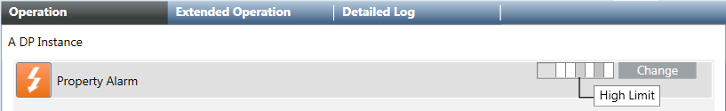
- The alarm is triggered and displayed in the Summary bar under the alarm category State. In the Cause column, the defined alarm text Fault on as well as the two defined conditions in parenthesis (Top limit Fault) are displayed.
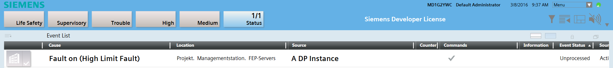
Acknowledge and Reset Alarm
- The alarm is triggered and displayed in alarm category State 1/1.
- In the Summary bar, click alarm category State.
- A filtered alarm list is displayed.
- In the Commands column, click Acknowledge.
- The next action is displayed in the Alarm state column.
- Select Project > Field Networks > [network name] > Hardware > [device name] > [data point].
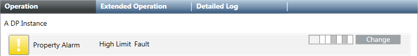
- Do the following:
a. In the Contextual pane, click the Operation tab.
b. Select the corresponding property (for example: Property Alarm).
c. In the BitString mask, deactivate Fault and Top limit (the states are displayed in the tool tip). The selected boxes are displayed in white.
d. Click Change.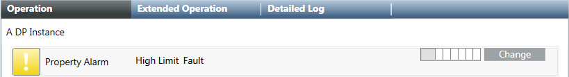
- In the Commands column, click Reset.
- The alarm is removed from the Alarm Summary bar and symbol returns to normal state in the Operation tab.
- Select the Detail log tab. The executed commands and resulting states can be printed for logging purposes.
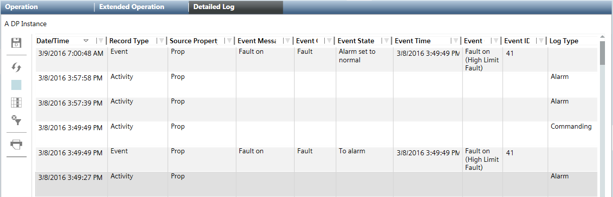
Information on how BitString Alarms Work
- Data type
Only the GmsBitString based on PvssBit32 data type support this alarm function. The data type GmsEnum based on PvssUInt is mostly used in existing libraries; they cannot be used for this BitString alarming.
- Text groups
The referenced text group must be defined in ascending order and without gaps and cannot have more than 32 entries:
− Valid text group: 0, 1, 2, 3, 4, 5
− Invalid text group: 0, 5, 6, 8, 9, 10
Click the check box to display and review a selected text group. An invalid text groups is framed in red.
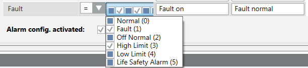
- Check the content of a text group.
- Select the Object Model.
- In the Details expander, click Text group.
- The Text group editor opens and the content is displayed.
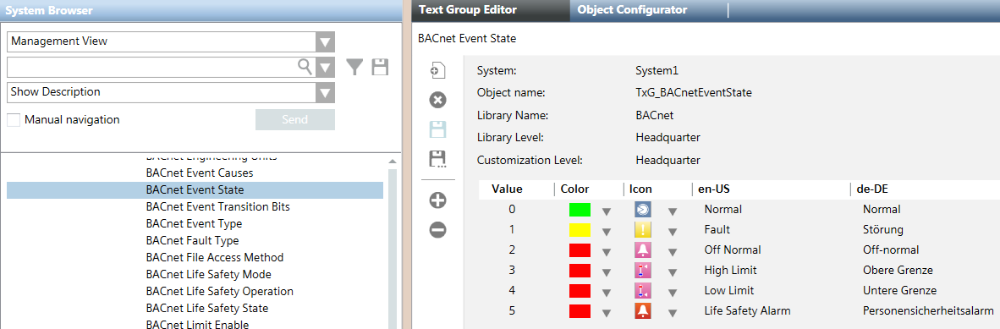
- Evaluation of the BitString masks
In the alarm definition, how the bit must be set for alarming is defined for each bit. An alarm is triggered in the following example only for Situation 2 and Situation 4. The BitString mask no longer matches the alarm definition for Situation 1 and Situation 3.
Example of possible Bit states | ||||||
Text group Fault | Bit | Alarm definition | Situation 1 | Situation 2 | Situation 3 | Situation 4 |
Normal | 0 | 0 | 0 | 0 | 0 | 0 |
Fault | 1 | 1 | 0 | 1 | 1 | 1 |
Off-normal | 2 | 0 | 0 | 0 | 0 | 1 |
High limit | 3 | 1 | 1 | 1 | 0 | 1 |
Low limit | 4 | 0 | 0 | 0 | 0 | 0 |
Pers.-Alarm | 5 | 0 | 0 | 0 | 0 | 0 |
|
|
| − | Alarm | − | Alarm |
If, after an alarm is triggered (Situation 2) another bit change occurs, for example, at bit 2 (Situation 4), the triggered alarm remains pending until acknowledged. The alarm can only be reset if bit 1 and 3 return to state 0.
If bit 2 is set first for situation 4, the alarming only occurs if bit 1 and bit 3 are subsequently set.